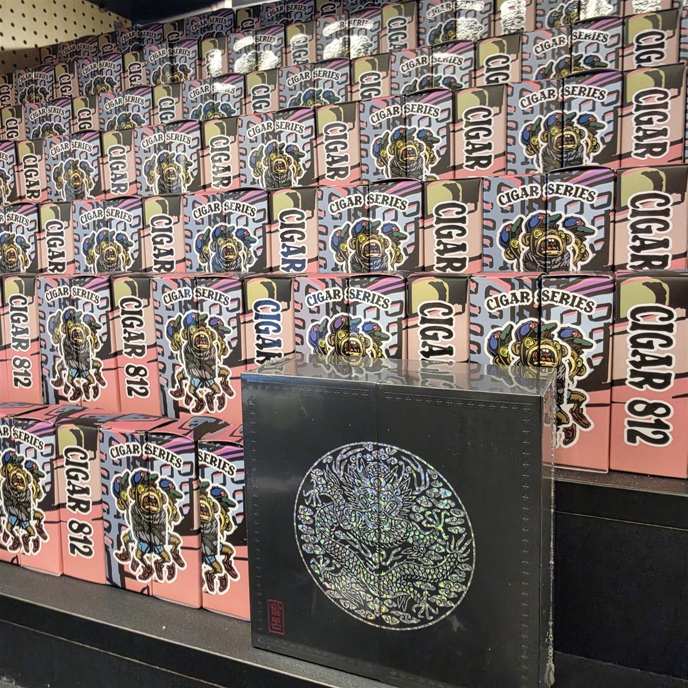

2026년 4월 24일 이전에 생산된 제품들입니다.
안녕하세요, 베이프렌드 전자담배 현풍점이에요. 오랫동안 연초를 피우시다가 전자담배를 처음 알아보러 오시는 분들이 많아요. 처음엔 모르는 게 많아서 뭘 물어봐야 할지도 막막하시죠. 오늘은 대구현풍전자담배 매장에서 이런 분들이 가장 많이 물어보시는 것들을 모았어요.
어떤 방식이 연초랑 비슷해요?
연초처럼 입에 머금었다가 들이마시는 방식이 입호흡이에요. 연초를 피우시던 분들은 입호흡으로 많이 시작하세요.
바로 깊게 들이마시는 폐호흡도 있어서, 두 가지를 다 시연해 보시고 정하시면 돼요.
어느 쪽이 맞을지 모르겠다면 평소 담배를 피우실 때 느낌을 말씀해 주세요. 그에 맞는 방식부터 권해 드릴게요.
담배 맛도 있어요?
담배 맛 액상이 따로 있어요. 연초 맛이 익숙하신 분들은 담배 맛부터 시작하시는 경우가 많아요.
과일이나 시원한 맛이 궁금하시면 같이 시연해 보시고 비교해 보세요.
담배 맛도 진한 맛, 부드러운 맛처럼 종류가 여러 가지라 직접 맛보고 고르시는 게 좋아요.
처음에 기침이 나요
처음 써 보시면 기침이 날 수 있어요. 천천히 부드럽게 써 보시면 금방 익숙해지세요.
시연할 때 편한 세기를 같이 찾아 드릴게요.
처음엔 한두 모금씩 천천히 써 보시는 걸 권해 드려요.
요즘 들어온 한정판
진열대에는 말론 한글 에디션 곤룡포 한정판도 들어왔어요. 화면 메뉴가 한글로 나오는 기기라 처음 쓰시는 분들도 보기 편해요.
처음 기기를 고르실 때 같이 구경해 보세요.


관리는 어렵지 않아요
기기는 충전하고, 액상을 채우고, 팟을 때맞춰 바꿔 주면 돼요. 처음엔 번거로워 보여도 며칠 쓰시면 금방 손에 익어요.
사용법은 매장에서 같이 해 보고 가시면 돼요.
액상은 한 병으로 꽤 오래 쓰셔서 생각보다 자주 사러 오지 않으셔도 돼요.
빨간 간판을 찾아오세요
대구현풍전자담배 매장은 유가읍 행정복지센터 건너편, 빨간 간판이에요. 매일 11시부터 밤 10시까지 열어요.
대구현풍전자담배 매장은 테크노폴리스에서 가까워서 퇴근길에 들르시기 좋아요. 처음 오셔도 천천히 상담해 드릴게요.
대구현풍전자담배 매장 안내
대구현풍전자담배 베이프렌드 현풍점이에요. 처음 오셔도 천천히 안내해 드려요. 빨간 간판을 찾아오세요.
| 항목 | 내용 |
|---|---|
| 매장명 | 베이프렌드 전자담배 현풍점 |
| 주소 | 대구 달성군 유가읍 테크노상업로 98 108호 |
| 영업시간 | 매일 11:00~22:00 |
| 휴무 | 연중무휴 |
| 전화 | 010-8989-6761 |
| 오시는 길 | 유가읍 행정복지센터 건너편, 빨간 간판 |
| 주차 | 방문 전 매장 문의 |
| 확인 사항 | 만 19세 이상, 신분증 지참 |
이 표는 「표」 버튼으로 직접 만드세요 — 2칸 × 9줄
구매 전에 신분증을 확인해요. 만 19세 이상이시면 편하게 오세요.
대구현풍전자담배 매장 문의도 톡톡으로 받아요. 원하시는 제품이 있는지 톡톡으로 편하게 물어보세요.
https://talk.naver.com/w1isbns?frm=mnmb
https://m.place.naver.com/place/2046108329/home
태그 9개 그대로 넣으세요.